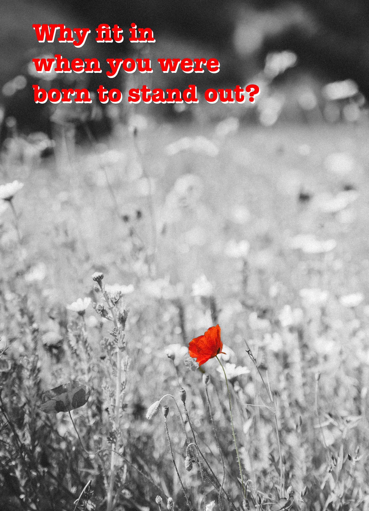
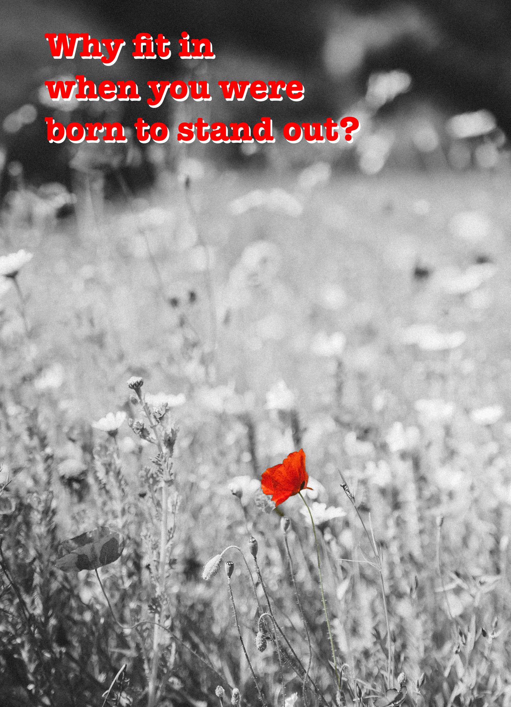

My name is Eileen King. I'm 29 years old and in 17th grade! I grew up in Chicago with my mom and three sisters, but now I live in Minnesota. I have two roommates and no pets (yet).
I work at a museum and at a school. When I'm not working, I like listening to music, riding my bike, hanging out with friends, and baking cookies.
Fun facts about me:
I chose this class because I love working with technology and with other people. I want to explore how we can use computers in creative ways and have fun.

 

I did a bunch of Minecraft-themed puzzles in an Hour of Code challenge, then I learned HTML and built this website!
We started second semester with some challenges about building circuits. We used wires, batteries, and switches to make lights and motors turn on and off! The first picture shows some of what I learned from that - some of the switches were really hard to figure out.
Next we designed projects where we made our own switches out of cardboard and metal tape. I chose a soccer theme for mine: when the girl kicks the ball into the goal, the scoreboard lights up! Here is a drawing of my design:
Here is the finished product. You can see that the light is off until the ball goes into the goal, and then it turns on! This is how it works: there is metal tape in the goal and on the back of the ball. When they touch each other, it closes the circuit so the light will turn on!
Overall, I'm happy with how it turned out, although I wish I had more time to add color. The hardest part was figuring out where to put tape and alligator clips to make the circuit work. Next, I'd like to try a more complicated circuit project, maybe something with a motor.